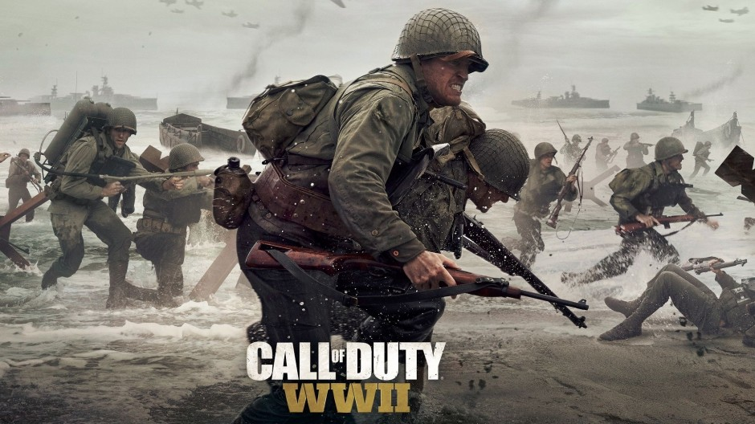

Activision muestra las claves para conseguir que
Call of Duty WWII sea el juego definitivo
de la Segunda Guerra Mundial
La licencia estrella de Activision regresará este año con 'Call of Duty WWII',
una declaración de intenciones que se sale por la tangente de cara a
la evolución futurística de la millonaria serie y nos devolverá a los escenarios
que lo iniciaron todo. Ahora bien, lo que marcará la diferencia será el
trabajo que se está poniendo en ofrecer una experiencia creíble.
Si bien hace no demasiado se confirmaba que ya no recuperaríamos
nuestra salud de manera automática, el nuevo making of ofrecido por
el estudio Sledgehammer pone el énfasis en la dedicación y los recursos
que se han usado para ofrecer un 'Call of Duty' realista, pero con detalles
impresionantes.

Más allá del nuevo apartado técnico, y
según indican en el mini documental creado para
la ocasión, el equipo de desarrollo se ha enfocado
en cuatro frentes para conseguir la experiencia definitiva:
- Por un lado se ha dado protagonismo
al sentimiento de camaradería entre los soldados,
algo que podremos comprobar en el modo campaña y
que esperamos que se manifieste de algún modo en el
modo multijugador que será presentado en el E3
- Desde el punto de vista histórico se ofrecerá una
ambientación sin precedentes. Sledgehammer no se ha medido
en recursos a la hora de adaptar las armas, los escenarios o los
vehículos originales y convertirlos al formato jugable.
- Call of Duty WWII' es un proyecto creado desde cero, lo que supone que
-pese a que se conservará buena parte de lo aprendido en las anteriores entregas
- se está abordando el desarrollo del juego de modo que suponga una
experiencia nueva para el usuario.
- Pero sobre todo, se está buscando provocar el factor emocional, y es que nada
de lo anterior serviría de cara a su campaña si
no consigue calar entre los usuarios.

Unas serie de claves necesarias y que le sentarán de maravilla a la saga 'Call of Duty' ,
aunque no podemos olvidar que esta serie de cambios pueden condicionar las espectaculares ventas que
obtiene anualmente la licencia, aunque siempre queda el modo multijugador (y la variante de zombis)
para compensarlo. ¿Conseguirá el giro de 'Call of Duty WWII' igualar el éxito de sus predecesores?
A partir del 3 de noviembre lo averiguaremos.